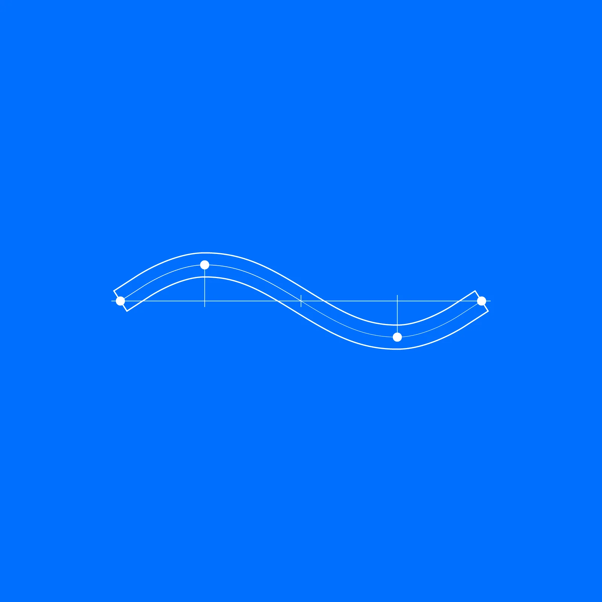
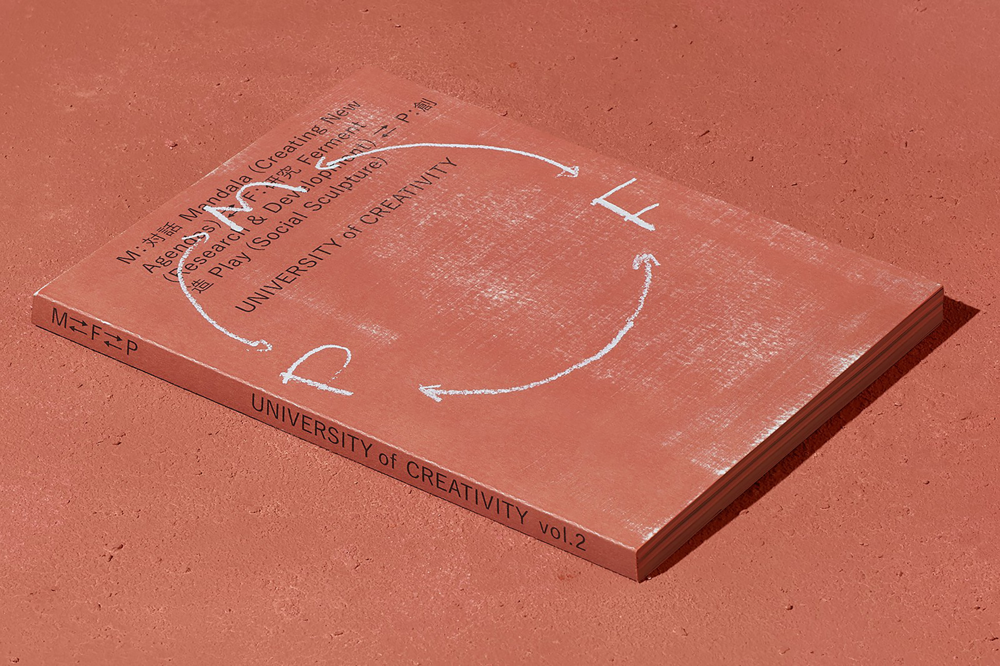
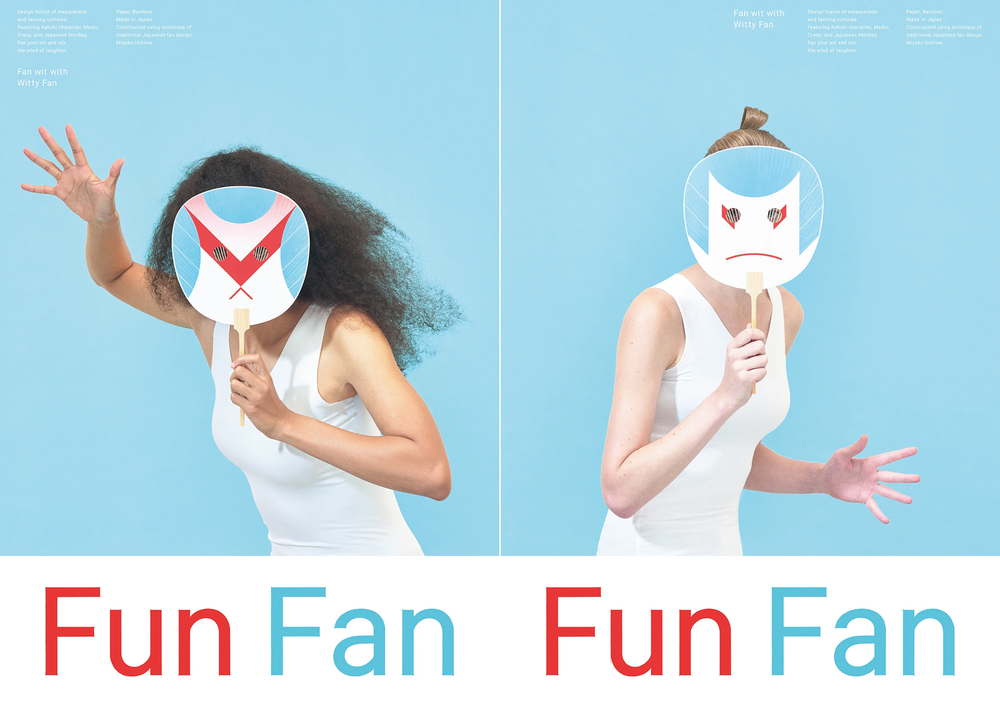
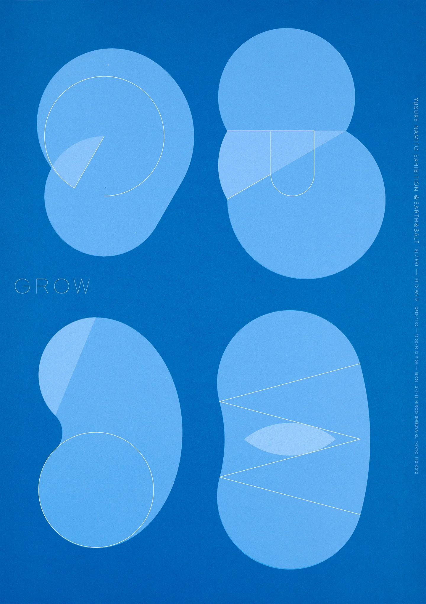

Our process unfolds through 3 layers Emerge - awakening the unseen Amplify - gathering momentum Resonant - attuning relations

nami Logo Structure
→やすらぐグラスや←

UNIVERSITY of CREATIVITY Book2 M⇄F⇄P

FunFan

GROW
publications
UNIVERSITY of CREATIVITY Book2 M⇄F⇄P
文字化け
forms after anima
GROW
info@design-nami.net
Ig
Li
Fb